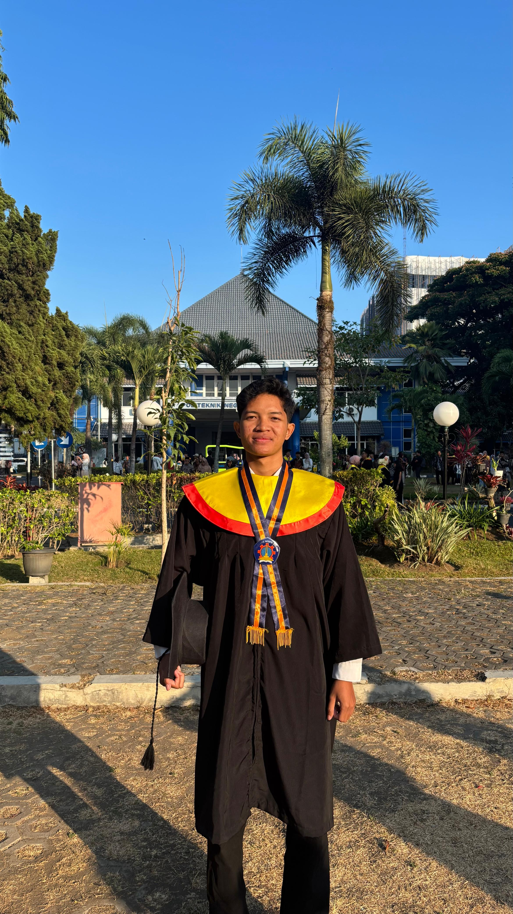

PROFIL & PENDIDIKAN
Menempuh pendidikan D-IV Teknik Elektronika di Politeknik Negeri Malang dengan IPK 3.46/4.00. Berfokus pada bidang sistem embedded, Internet of Things (IoT), PLC, otomatisasi industri, dan pemeliharaan sistem kelistrikan. Aktif menyelesaikan proyek rekayasa perangkat keras (hardware) berbasis mikrokontroler serta energi terbarukan.

Politeknik Negeri Malang
D4 Teknik Elektronika
GPA: 3.46 / 4.00
[2022 - 2026]
NAME
Mohamad Garda W, S.Tr.T.
LOCATION
Malang, Jawa Timur
